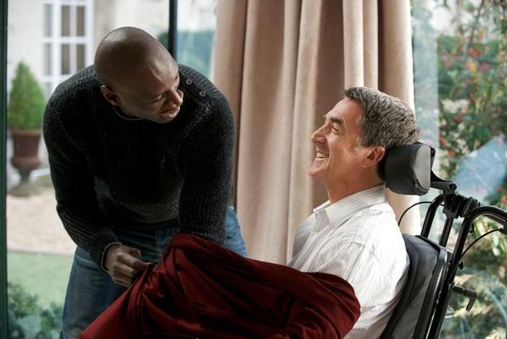
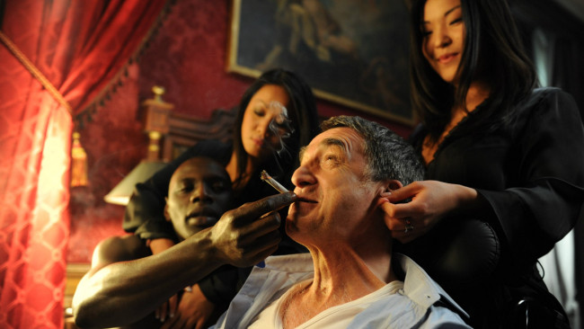
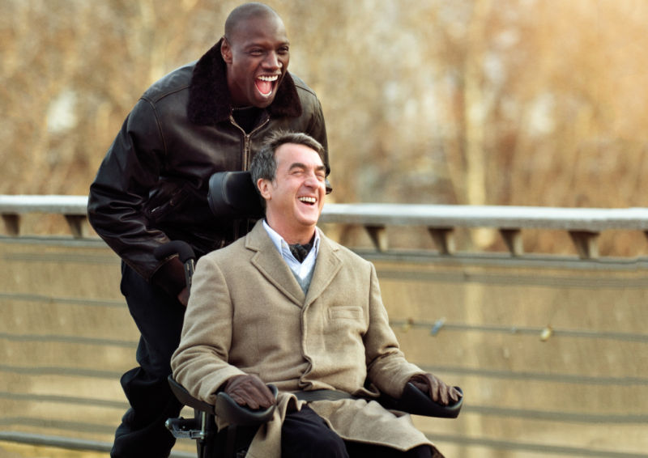
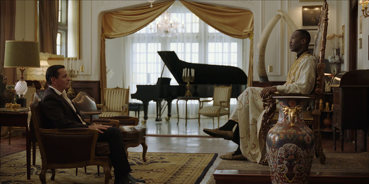
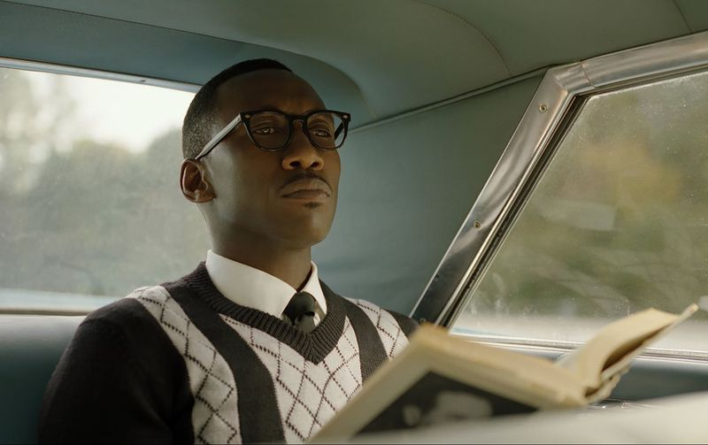
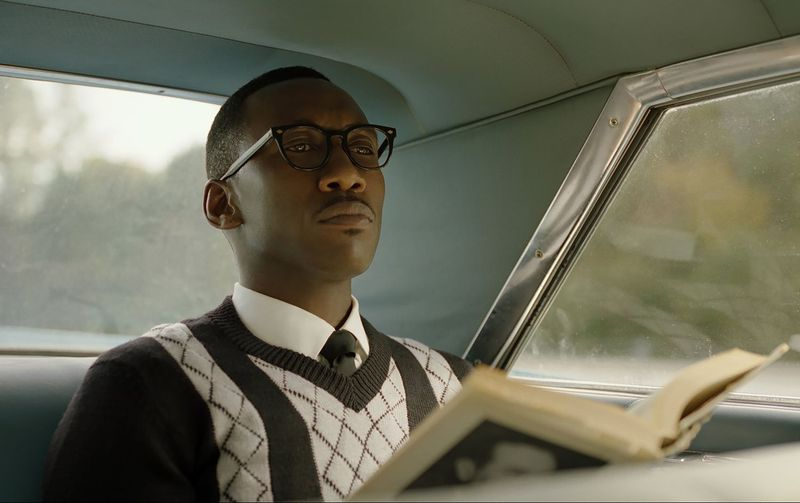
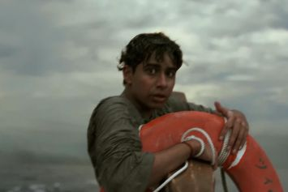
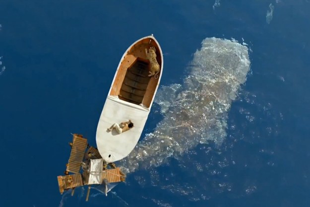
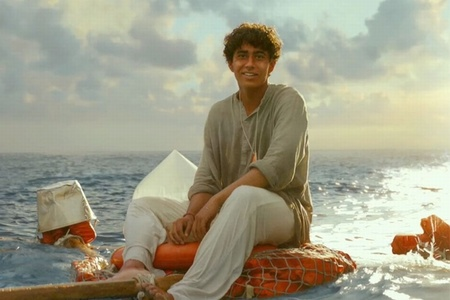

1+1
О фильме
| Год |
2011 |
| Страна |
Франция |
| Жанр |
Комедийная, драма, бадди-муви |
| Режиссер |
Ольвье Накаш, Эрик Толенадо |
| Бюджет |
11 500 000$ |
Краткое содержание
Пострадав в результате несчастного случая, богатый аристократ Филипп нанимает в помощники человека,
который менее всего подходит для этой работы, — молодого жителя предместья Дрисса,
только что освободившегося из тюрьмы. Несмотря на то, что Филипп прикован к инвалидному креслу,
Дриссу удается привнести в размеренную жизнь аристократа дух приключений.
Кадры из фильма



Зеленая книга
О фильме
| Год |
2018 |
| Страна |
США |
| Жанр |
Комедийная драма, роуд-муви, биография |
| Режиссер |
Питер Джоррелли |
| Бюджет |
321 752 656 $ |
Краткое содержание
Утонченный светский лев, богатый и талантливый музыкант нанимает в качестве водителя и телохранителя человека,
который менее всего подходит для этой работы. Тони «Болтун» — вышибала, не умеющий держать рот на замке и пользоваться
столовыми приборами, зато он хорошо работает кулаками. Это турне навсегда изменит жизнь обоих.
Кадры из фильма

 

Жизнь Пи
О фильме
| Год |
2013 |
| Страна |
США, Китайская Республика |
| Жанр |
Приключенческая драма |
| Режиссер |
Энг Ли |
| Бюджет |
120 млн $ |
Краткое содержание
Это история сына владельца одного индийского зоопарка, мальчика по имени Пи.
Он познаёт мир, учится отстаивать свои принципы, ищет собственную дорогу к Богу, живя по канонам трёх конфессий, влюбляется…
Но волей судьбы его семья вынуждена эмигрировать. На полпути между Индией и Канадой корабль терпит крушение,
и Пи остаётся в шлюпке вместе с бенгальским тигром, гиеной, зеброй и орангутаном. Вокруг безбрежная водная гладь,
а впереди — неизвестность...
Кадры из фильма


